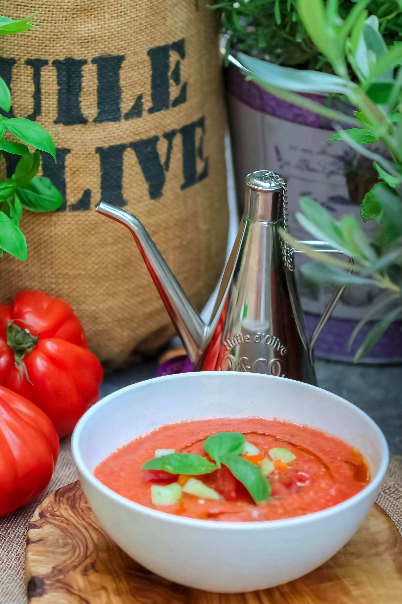

Home
Gazpacho

Description
Gazpacho is a refreshing cold soup from the south of Spain, especially popular in Andalucía. It's made with ripe tomatoes, cucumbers, bell peppers, and a splash of olive oil — all blended together into a smooth, chilled soup that’s perfect for hot summer days. 🧊
Ingredients
- 4 ripe tomatoes
- 1 cucumber
- 1/2 green bell pepper
- 1 garlic clove
- 2 tablespoons vinegar
- Salt and pepper
- Olive oil
Steps
- Blend it all: In a blender, combine tomatoes, cucumber, bell pepper, garlic, olive oil, vinegar, and a pinch of salt. Blend until very smooth.
- Chill: Refrigerate for at least 1 hour. Gazpacho is best served cold.
- Serve: Pour into bowls or glasses, drizzle with olive oil, and enjoy! Optionally top with diced veggies or croutons.